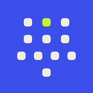

Entrar no app CazéStats.TV
Entre com sua conta Google. Depois você volta para o app, já com favoritos, palpites e bolão.
Voltar para o app
Entre com sua conta Google. Depois você volta para o app, já com favoritos, palpites e bolão.
Voltar para o app